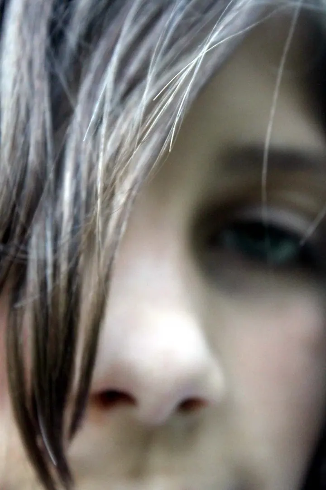
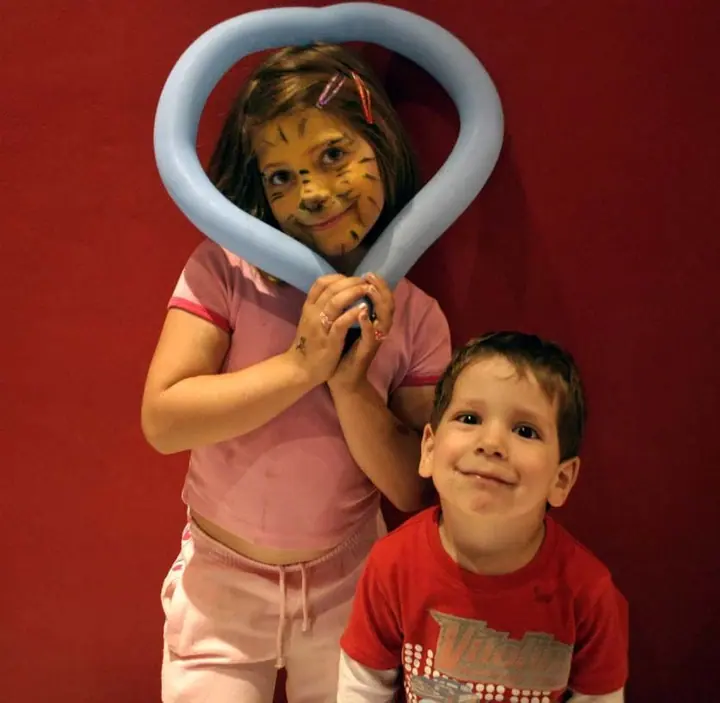
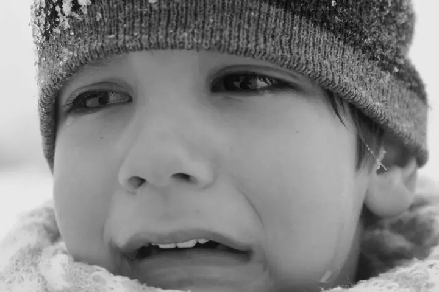

01 / 04
Sportovní fotografie
Fotím zápasy i celodenní turnaje a závody, nejčastěji lední hokej. Vybrat si můžete focení jednoho zápasu, nebo celý den na turnaji.
Zeptat se na termín→





Fotím led, pódium i lidské tváře
Zeptat se na termín →(01) Ahoj
Jmenuji se Miroslav Teplárek a fotím v Kladně a okolí. Nejčastěji mě najdete u hokejových mantinelů , pod tanečním pódiem nebo u portrétů, které zachycují emoce . Pracuji v ateliéru i v terénu.
(02) Co fotím
01 / 04
Fotím zápasy i celodenní turnaje a závody, nejčastěji lední hokej. Vybrat si můžete focení jednoho zápasu, nebo celý den na turnaji.
Zeptat se na termín→02 / 04
Nafotím vaši akci, oslavu narozenin, večírek nebo vystoupení. Na konci dostanete výběr fotek z celé akce.
Zeptat se na termín→03 / 04
Fotím portréty pro radost i zachycení emocí, fotky do CV a na firemní weby. Příležitostně i módní fotografie, třeba pro módní bloggerky.
Zeptat se na termín→Dále nabízím
Klidné focení v ateliéru nebo v terénu, ze kterého dostanete 10 až 15 hotových fotek.
↗(03) Portfolio
Kliknutím fotku zvětšíte · fotografie jsou ilustrační
(04) Postup
Od první zprávy po hotovou galerii.
Krok 1 z 4
Napíšete mi nebo zavoláte, co chcete fotit. Zápas, turnaj, oslavu nebo portrét, a společně vybereme termín a rozsah focení.
Krok 2 z 4
Domluvíme se, jestli budeme fotit v ateliéru, nebo v terénu, a co od fotek čekáte.
Krok 3 z 4
Přijedu na místo a fotím. U akcí v Kladně a okolí do 20 km je doprava už v ceně.
Krok 4 z 4
Fotky projdu, vyberu ty nejlepší a upravím je. Předám vám je na CD nebo flash disku, na přání i vytištěné a zarámované.
Na ledě rozhoduje zlomek vteřiny.

(05) Za objektivem
Fotím sport, akce, lidi, produkty i reklamní snímky. Nejvíc času trávím na zimním stadionu, kde fotím hokejové zápasy a turnaje, ale stejně rád fotím taneční vystoupení, oslavy, večírky nebo obyčejnou fotku do životopisu.
Portréty fotím pro radost i proto, abych zachytil emoce. Příležitostně fotím také módu, třeba pro módní bloggerky, a mám i vlastní experimentální tvorbu. Postarám se o to, aby vaše fotky vypadaly profesionálně.
U focení moje práce nekončí. Umím retuše i fotomontáže, fotky vám vytisknu na libovolný formát, na papír, plátno nebo fólii, a na přání je i zarámuji.
Miroslav
Miroslav Teplárek · Sportovní a eventový fotograf
Focení jednoho zápasu, zhruba 2,5 hodiny, stojí 1 200 Kč. Celodenní turnaj nebo závod, tedy 8 hodin focení, vyjde na 3 800 Kč.
První hodina focení stojí 1 600 Kč, každá další 600 Kč. Doprava na místo v Kladně a okolí do 20 km je v ceně.
Ano. Portrét s 1 až 2 fotkami vhodnými na CV nebo firemní web stojí 1 400 Kč.
Odevzdávám výběr fotek na CD nebo flash disku. Pokud chcete, fotky vám vytisknu na papír, plátno nebo fólii a zarámuji je.
(07) Kontakt
Napište pár vět o tom, co si představujete, a termín, který se vám hodí.